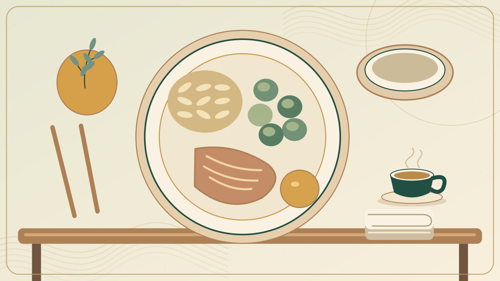
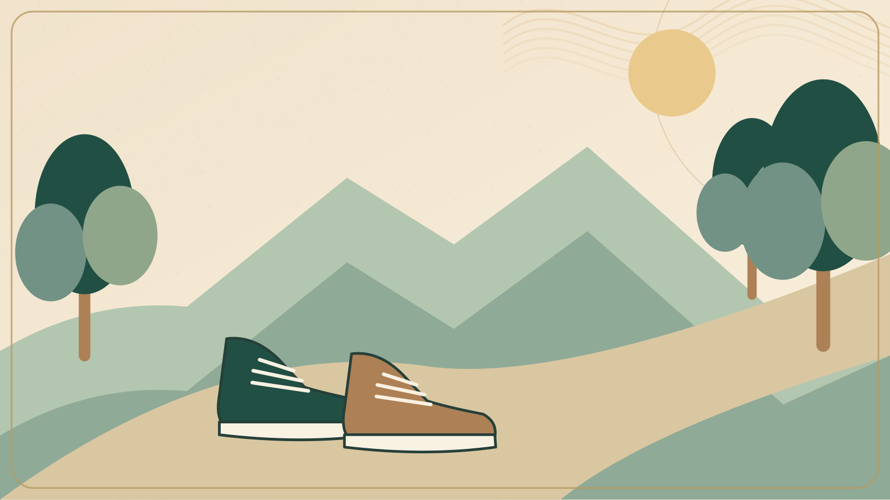
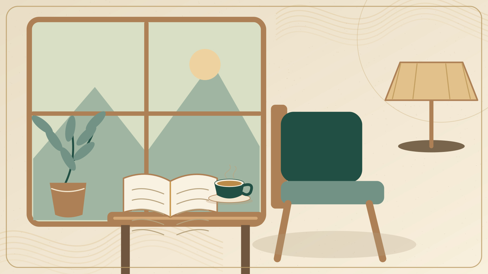
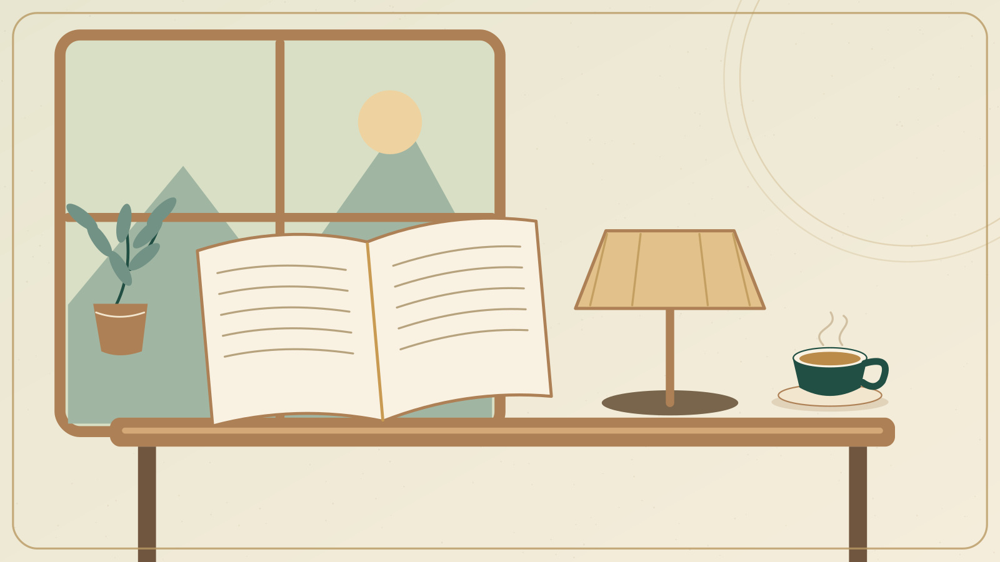
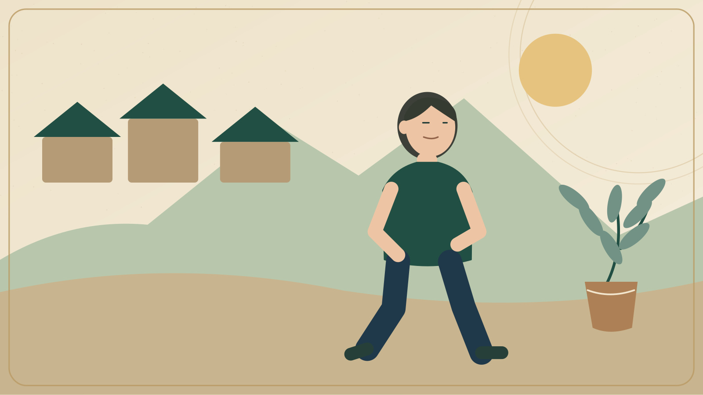

JIANG MERIDIAN WELLNESS JOURNAL
從東方經絡文化、手技接觸與生活習慣，認識日常放鬆的不同面向。找到一篇適合今天的閱讀。
共50篇文章
以下為全部50篇文章；不啟用 JavaScript 仍可閱讀。
專題 39 · 芳香文化與空間
從木質、花香、草本三種氣味印象出發，理解香氣描述、個人喜好與空間使用界線。
專題 40 · 芳香文化與空間
用事先詢問、無香選擇和清楚的回饋，建立尊重不同感官偏好的共享空間。
專題 41 · 芳香文化與空間
了解香味與空氣品質的差異、污染來源控制、換氣及共享空間的使用原則。
專題 42 · 芳香文化與空間
選購香氛用品前，先看用途、來源、期限與注意事項，避免混淆空間用品及化粧品。
專題 43 · 芳香文化與空間
不依賴香味用品，也能透過光線、整潔、材質和個人偏好安排自在的休息空間。
專題 44 · 日常養生習慣
從可維持的起床、用餐、活動及休息安排著手，建立適合自己生活條件的節奏。

專題 45 · 日常養生習慣
參考國健署均衡飲食觀念，從六大類食物、外食選擇與可行的用餐安排開始。

專題 46 · 日常養生習慣
從短程步行、合適鞋履、天候及可執行的行程安排，認識適量的日常活動。

專題 47 · 日常養生習慣
用現有家具、適當照明與簡單收納，打造符合生活需求且不妨礙通行的休息角落。
專題 48 · 日常養生習慣
透過簡單的生活觀察，分辨自己喜歡的休息方式、時間與共享環境條件。
專題 49 · 服務安全與預約
辨識非醫療性民俗調理的定位、服務說明、廣告界線與必要的就醫安排。
專題 50 · 服務安全與預約
預約之前先確認服務內容、總費用、時間、地點及個人偏好，避免把洽詢視為正式預約。
專題 27 · 東方經絡文化
以歷史概念、現代解剖與服務界線三個層次，理解經絡一詞而不混淆不同知識系統。
專題 28 · 東方經絡文化
從接觸、停頓、方向與接受者的感受理解東方手技文化，而非用力道判斷好壞。
專題 29 · 東方經絡文化
解讀經絡、穴位、手技與調理等詞彙的語境，避免把文化名詞誤當成醫療處方。
專題 30 · 東方經絡文化
以光線、留白、自然材質和個人喜好為起點，理解東方美學如何融入日常休息。
專題 31 · 身體部位保養
從鞋襪清潔、試穿與活動休息安排認識足部的日常照顧。
專題 32 · 生活姿態與活動
以工作段落、工具位置和可執行的休息提醒，建立不影響工作的小習慣。
專題 33 · 生活姿態與活動
以分區、備妥工具和分段休息，讓家務安排更容易持續。

專題 34 · 生活姿態與活動
從閱讀環境、自然停頓與紙本螢幕切換安排專注與休息。
專題 35 · 生活姿態與活動
先評估物品、動線與協助需求，再選擇分次搬拿及合適的休息節點。

專題 36 · 生活姿態與活動
依交通條件、天候與個人能力，規劃適合自己的安全步行與通勤節奏。
專題 37 · 日常養生習慣
從必要事項、休息空檔及可調整的生活節奏，安排工作日與休息日。
專題 38 · 日常養生習慣
從光線、聲音、室內舒適度及睡前生活習慣，安排適合自己的休息空間。
專題 15 · 按摩手技知識
認識按式手技的停留與離開，從接觸感受、力道偏好和事前溝通了解這種手法。
專題 16 · 按摩手技知識
從小幅環旋、節奏變化和遮巾感受認識揉式手技，不將動作幅度視為效果。
專題 17 · 按摩手技知識
從方向、接觸範圍及連續性認識推式，理解觀賞影片與實際體驗的不同。
專題 18 · 按摩手技知識
了解撥式示意中的局部接觸變化，辨識手法風格並建立安全的感受回饋。
專題 19 · 按摩手技知識
把快慢、範圍和停留感受分開思考，找出自己能清楚表達的接觸偏好。
專題 20 · 身體部位保養
從專注工作的間隙、光線、聲音及休息環境，為自己安排短暫的安靜時間。
專題 21 · 身體部位保養
從肩部日常使用的情境、桌面配置和工作空檔，找出適合自己的休息安排。
專題 22 · 身體部位保養
以背部手技示意為入口，了解接觸範圍、衣著遮蓋及接受者的自主選擇。
專題 23 · 身體部位保養
從反覆拿取、輸入和握持的情境，思考工具位置、工作輪替和手部休息。
專題 24 · 身體部位保養
從滑鼠、鍵盤及手持工具的使用方式，認識手腕周圍的工作環境與休息選擇。
專題 25 · 身體部位保養
從日常坐姿、步行及休息環境著手，並了解涉及臀髖周圍服務時的隱私界線。
專題 26 · 身體部位保養
從每天的步行、站立及鞋履使用情境，規劃可以持續的腿足活動與休息。
專題 05 · 東方經絡文化
從歷史脈絡理解經絡語彙，分辨文化傳承、現代身體知識及日常放鬆的不同角色。
專題 06 · 按摩手技知識
用接觸範圍、動作方向與節奏辨識四式手技，並理解服務前如何溝通偏好。
專題 07 · 按摩手技知識
力道不是品質分數。了解如何描述感受、確認同意，以及為何不必忍受疼痛。
專題 08 · 按摩手技知識
從接觸面積與主觀感受理解手掌、指腹的差異，不涉及穴位施力教學。
專題 09 · 身體部位保養
從工作間隙、鞋履及下班後的休息著手，建立可持續的腿足照顧習慣。
專題 10 · 生活姿態與活動
讓手機使用、姿勢變換與短暫離開螢幕成為容易實行的生活節奏。
專題 11 · 生活姿態與活動
以行車安全為先，規劃途中休息、抵達後的活動與返程安排。
專題 12 · 身體部位保養
以工作環境與休息節點為核心，讓腰背日常照顧不必等到一天結束。
專題 13 · 芳香文化與空間
從植物、木質、光線、通風及個人喜好認識東方空間，不涉及精油療效或配方。
專題 14 · 服務安全與預約
了解知情同意、遮蓋、停止要求及預約前應確認的事項。
專題 01 · 東方經絡文化
經絡是傳統東方身體觀念中的術語；現代民俗調理的服務定位與醫療行為不同。
專題 02 · 生活姿態與活動
把短暫的起身、休息與活動放進一天，不必等到工作全部結束。
專題 03 · 日常養生習慣
充足睡眠、均衡飲食、規律活動與安排休息，是可以逐步實踐的生活基礎。
專題 04 · 服務安全與預約
從預約、隱私、接觸範圍與力道溝通開始，建立清楚的服務期待。
沒有符合的文章，請試試其他關鍵字或選擇全部分類。
知識中心以傳統文化、一般生活保養與非醫療性服務界線為主，現有50篇圖文。新內容由 AI 協助編輯，尚待江老師本人核定，不是本人親筆或已審閱的聲明。圖片為 AI 影像與原創圖形示意。若有身體不適，請尋求正規醫療評估。
官方資訊入口：衛福部民俗調理、國民健康署。